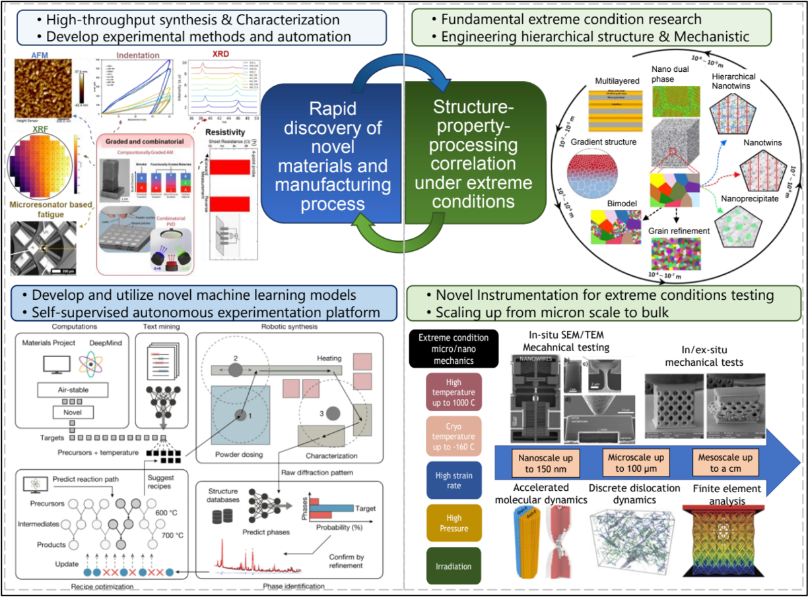

Welcome to the MICRON Lab
Materials Innovation through Custom Routes and Optimized Nanoscale-design
Department of Materials and Metallurgical Engineering
New Mexico Institute of Mining and Technology

Designing at the micro-scale. Manufacturing for the future. Building for the extreme.
The MICRON Laboratory (Materials Innovation through Custom Routes and Optimized Nanoscale-design) at New Mexico Institute of Mining and Technology focuses on rapid discovery of novel materials and understanding structure-property-processing correlations under extreme conditions. Our research aims to develop hierarchical materials with enhanced properties through multi-scale engineering, advanced manufacturing including additive and thin film deposition, and in-situ SEM/TEM mechanical testing. We bridge fundamental materials science with practical engineering solutions for next-generation applications in demanding environments.
Featured News
NIRF Fellow award
Recognized as an NIRF Fellow by NM INBRE for contributions to research and mentorship.
TMS representative at the 2019 ELA conference
Selected to represent TMS at the 2019 Emerging Leaders Alliance Conference, joining a cadre of over 60 leaders from across the engineering community.
Latest Publications
Recent papers from our group.
- Elucidating the Origins of Grain Growth in the High Cycle Fatigue Degradation of Au Thin Films Acta Materialia, 122301 (2026)
- Novel Materials Discovery via High-Throughput Automated Tribological Testing of Thin Films 2026
- Energy Dissipation of Metallic Microlattices Under Extreme Thermomechanical Environments Acta Materialia (2026)
- Copper-Based Crystalline-Metallic Glass Composite Thin Films: A Novel Material with Enhanced Strength and Thermally Stable Nanotwins Advanced Functional Materials (2026)
- Enhanced strengthening via nanoscale composition modulation Scripta Materialia 271, 116999 (2026)
- Putting fatigue to rest via solute-pinned boundaries Materials Today 93, 103187 (2026)